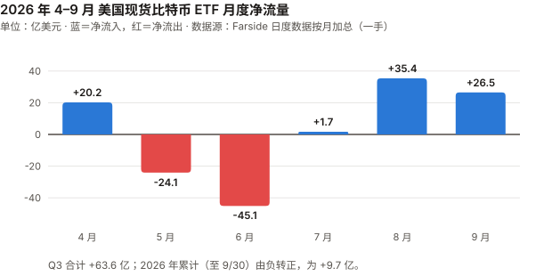
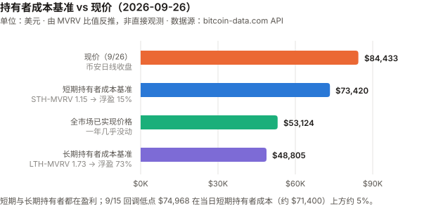
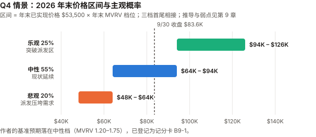

BTC / Bitcoin 完整调研与分析报告
编写日期：2026 年 10 月 3 日
数据截止：2026 年 9 月 30 日（9 月与 Q3 完整数据已闭合）；10/1–10/2 的个别数据仅作参考
版本：2026 年 9 月版 兼 2026 年 Q3 季度报告
研究方法：基于anthropics/financial-services插件的行业概览（sector-overview）、投资论点追踪（thesis-tracker）、催化日历（catalyst-calendar）、竞争分析（competitive-analysis）四个框架。本版更新要点：
- 9 月 +6.42%，Q3 +42.64%——收于 $83,623.60（币安日线），Q3 是 2024 年 Q4 以来最好的季度，终结了连续三个季度的下跌。
- 本季最重要的发现：BTC 在宏观收紧中上涨。 9/16 美联储加息 25 基点（三年来首次），10 年期美债从 4.75% 升到 5.29%（年内最高），美元指数走强、黄金跌 6.6%——BTC 却涨了 6.4%。
Q3 全季 10 年期收益率上行 85 基点，BTC 上涨 42.6%。- 因此撤回 8 月版的长期认知「BTC 最直接的定价锚是长端美债收益率」。 过去 12 个月 BTC 日收益与 10 年期收益率日变化的相关系数是 −0.04；8 月 BTC +25% 那个月，10 年期收益率月度变化是 0 基点（见 3.1）。
- 8 月版的三处数据错误，本版更正：
① 把 8/8 的 STH-MVRV 0.96、LTH-MVRV 1.32 写成「8 月底」——8/31 实际是 1.12 / 1.61，「短期持有者整体浮亏」的结论不成立；
② 写 Strategy「8 月未买卖任何比特币」——8-K 显示它 8/24–8/30 买入了 4,603 枚；
③ 8 月版自己表里的 845,050 > 840,447 本应暴露第 ② 条。- CLARITY 法案 9/15 参议院程序性投票 49–50 失败（需 60 票），2026 年通过的可能性基本消失。
- Strategy 9 月恢复买币（2,615 枚），同时回购自家 STRC 优先股 $6.41 亿——按 9 月窗口是买币额的 2.9 倍，按 8/24–9/27 窗口是 1.09 倍；美元储备与现金合计一个月减少 $6.9 亿。
- ETF 9 月净流入 $26.5 亿，Q3 合计 $63.6 亿，2026 年累计由负转正（+$9.7 亿）——本版起 ETF 流量改用 Farside 日度一手数据。
本版方法论改进：
⑧ 价格改用币安日线（UTC 收盘），ETF 改用 Farside 日度表，链上指标改用 Coin Metrics 与 bitcoin-data.com 两家数据商的 API，宏观收益率改用美国财政部官方数据——此前这四类全是搜索摘要；
⑨ 情景推演新增 Q4 价格区间（比 2030 区间更可检验），三档按 MVRV 首尾相接，覆盖「现状延续」；
⑩ BTC 记分卡升级到本系列的 11 条检验门槛，按统一标准复核全表（累计正确率改为 11%），并补登作者的基准预期。免责声明：本报告不构成任何投资建议。所有分析仅供研究参考，投资决策请咨询专业顾问。
核心结论摘要（一页速览）
| 维度 | 核心判断 |
|---|---|
| BTC 是什么 | 数字黄金 + 去中心化结算网络 + 货币实验 + 宏观风险资产，四重属性并存 |
| 当前所处阶段 | 第四个减半周期第 29 个月。9/30 收于 $83,623.60，距 ATH $126,199.63（币安，2025-10-06 盘中）回撤 33.7% |
| Q3 发生了什么 | +42.64%：7 月 +7.27%、8 月 +24.95%、9 月 +6.42%。同期出现的是 ETF 资金回流（Q3 +$63.6 亿）与空头回补，起点是深度低估区（6/30 MVRV 1.10）——不是宏观放松：同期美联储加息、10 年期收益率 +85 基点。这些是相关，不是已证明的原因 |
| 9 月发生了什么 | 前半月下跌（9/15 低点 $74,968，当天 CLARITY 投票失败、ETF 流出 $4.5 亿），后半月反弹（9/18 +5.85%、9/21 +6.70%，9/21 ETF 单日流入 $9.99 亿，为 2025 年 10 月以来最大） |
| 最重要的认知变化 | 撤回 8 月版「BTC 定价锚是长端美债」——它唯一的论据（8 月回购压低收益率）经不起端点检验（8 月 10 年期月度变化 0bp）。但 Q3 的数据也无法证明利率不重要：同期有更大的力量在起作用，日度上 7、9 月仍有约 −0.4 的相关 |
| 核心多头逻辑 | 绝对稀缺；ETF 在加息月仍净流入 $26.5 亿；Strategy 恢复买币且 mNAV（EV）回到 1.15；算力回升到峰值的 85% |
| 核心空头逻辑 | 价格已回到长期持有者的派发区（Glassnode 标注 $81K–$86K，转述）；CLARITY 年内无望；点阵图中位数指向年内再加息一次；10 年期 5.29%；已实现价格一年没涨（但见顶后一年横盘是历史常态，见 9.3） |
| 短期催化剂 | 10/27–28 FOMC；10/28 Strategy 股东特别会议（优先股改为每日派息）；12/8–9 FOMC（含点阵图） |
| 估值立场 | MVRV 1.56，处于 2022-10 以来的 44% 分位——不便宜也不贵。作者的基准预期：Q4 末（12/25–12/31 七日均价）落在 $64K–$94K（MVRV 1.2–1.75），概率 55%，已登记为记分卡 B9-1。这组概率（20/55/25）几乎等于随机游走的机械基线，作者的增量判断很小 |
| 风险等级 | 极高——建议作为资产组合中 1–5% 的「非对称回报」配置 |
1. BTC 的起源与历史背景
1.1 密码朋克的思想遗产（1980s–2007）
比特币不是凭空出现的，而是密码朋克运动（Cypherpunk Movement，1980 年代末兴起的密码学家与自由意志主义者社群） 数十年积累的产物。
| 年份 | 里程碑 | 对比特币的影响 |
|---|---|---|
| 1982 | David Chaum 发表"盲签名"论文 | 匿名数字现金的概念奠基 |
| 1997 | Adam Back 发明 Hashcash（工作量证明） | 直接成为比特币的挖矿机制 |
| 1998 | Wei Dai 提出 b-money | 匿名分布式电子现金的蓝图 |
| 1998 | Nick Szabo 提出 Bit Gold | 比特币最直接的概念前身 |
| 2004 | Hal Finney 创建 RPoW（可复用工作量证明） | 首次实现可复用的 PoW 系统 |
这些探索都卡在同一个难题上：如何在没有可信第三方的条件下解决双重支付（Double-Spending）——即防止同一笔钱被花两次。
1.2 2008 年金融危机：催化剂
2008 年 9 月 15 日雷曼兄弟破产。10 月 31 日，化名 Satoshi Nakamoto（中本聪） 的匿名作者在密码学邮件列表发表了 9 页白皮书《Bitcoin: A Peer-to-Peer Electronic Cash System》。
1.3 比特币网络的诞生（2009）
- 1 月 3 日：创世区块诞生，Coinbase 字段嵌入当日《泰晤士报》头条 "The Times 03/Jan/2009 Chancellor on brink of second bailout for banks"（财政大臣濒临对银行的第二轮救助）
- 1 月 12 日：中本聪向 Hal Finney 发送 10 BTC——人类第一笔比特币交易
1.4 最初要解决的四个问题
- 信任：无需信任中介即可转移价值
- 通胀：央行可无限印钞 vs 比特币硬顶 2100 万枚
- 审查：任何人无需许可即可收发
- 双重支付：通过 PoW + 最长链共识首次在去中心化网络中解决
1.5 与传统货币、银行、黄金的关系
| 维度 | 法定货币（美元） | 黄金 | 比特币 |
|---|---|---|---|
| 发行机制 | 央行酌情印钞 | 开采（年增 1–2%） | 算法固定，每 4 年减半 |
| 总供应量 | 无限 | 有限但总量未知 | 硬顶 2100 万枚 |
| 保管 | 银行存款 | 实物 / ETF | 自托管 / 托管 |
| 转移 | 银行系统（慢、可审查） | 物理运输 | 互联网（快、无需许可） |
| 对手方风险 | 银行破产、政府违约 | 低 | 自托管时为 0 |
| 历史 | 50 余年（后布雷顿森林） | 5000 年 | 17 年 |
2. BTC 的发展阶段划分
阶段一：诞生与极早期实验（2008–2012）
| 时间 | 事件 |
|---|---|
| 2008.10.31 | 白皮书发布 |
| 2009.1.3 | 创世区块 |
| 2010.5.22 | "比特币披萨日"——1 万 BTC 换两块披萨 |
| 2010.8.15 | 1840 亿 BTC 溢出漏洞被利用并紧急修复（史上唯一一次重大协议事故） |
| 2010.12 | 中本聪最后一次公开留言后消失 |
| 2011.6 | 首次泡沫破裂：$30 → $0.01（Mt. Gox 被黑） |
| 2012.11.28 | 第一次减半：50 → 25 BTC |
阶段二：交易所、矿业与投机市场成形（2013–2016）
| 时间 | 事件 |
|---|---|
| 2013.4 | 塞浦路斯银行危机，BTC 一个月内 $30 → $260 |
| 2013.11 | 首破 $1,000 |
| 2014.2 | Mt. Gox 倒闭，85 万 BTC 失踪 |
| 2015.7 | Ethereum 主网上线 |
| 2016.7.9 | 第二次减半：25 → 12.5 BTC |
阶段三：牛熊周期与扩容内战（2017–2020）
| 时间 | 事件 |
|---|---|
| 2017 | ICO 泡沫，12 月见顶 $19,783 |
| 2017.8 | Bitcoin Cash 硬分叉；SegWit（隔离见证）激活 |
| 2017.12 | CME、Cboe 推出比特币期货 |
| 2018 | 加密寒冬，跌至 $3,200 |
| 2020.3.12 | "黑色星期四"，单日腰斩至 $3,800 |
| 2020.5.11 | 第三次减半：12.5 → 6.25 BTC |
阶段四：机构入场与 ETF 推进（2020–2024）
| 时间 | 事件 |
|---|---|
| 2020.8–12 | MicroStrategy（现 Strategy）大规模购入，上市公司储备时代开端 |
| 2021.5 | 中国全面禁止挖矿，算力"大迁移" |
| 2021.11 | ATH $69,000 |
| 2022.11 | FTX 崩溃——行业的"雷曼时刻" |
| 2024.1.10 | 美国 SEC 批准 11 支现货比特币 ETF |
| 2024.4.20 | 第四次减半：6.25 → 3.125 BTC |
阶段五：ETF 后周期、主权叙事与 AI 冲击（2024–至今）
| 时间 | 事件 |
|---|---|
| 2025.3 | 特朗普签署行政令建立美国战略比特币储备（SBR） |
| 2025.7 | GENIUS 法案（稳定币框架）签署；CLARITY 法案众议院通过 294–134 |
| 2025.10.6 | ATH（币安盘中 $126,199.63）——减半后 18 个月，符合历史节奏 |
| 2025.Q4–2026.Q2 | 连续三个季度下跌（−23.1% / −22.1% / −14.1%） |
| 2026.5 | Kevin Warsh 就任美联储主席（鹰派） |
| 2026.6 | ETF 单月流出 $45.1 亿（Farside），BTC 6/30 收于 $58,624.71 |
| 2026.7.29 | FOMC 维持 3.50–3.75%，三人主张加息 |
| 2026.8 | BTC +24.95%；ETF 净流入 $35.4 亿 |
| 2026.9.15 | CLARITY 法案参议院程序性投票 49–50 失败；BTC 当日 −3.25%，收于 $75,644 |
| 2026.9.16 | FOMC 加息 25 基点至 3.75%–4.00%，12:0 全票——2023 年 7 月以来首次加息 |
| 2026.9.21 | ETF 单日净流入 $9.99 亿，BTC 单日 +6.70%，盘中高点 $87,395.67 |
| 2026.Q3 | +42.64%，2024 年 Q4 以来最好的季度 |
3. BTC 当前现状分析
3.0 论点校验：8 月版哪里对了、哪里错了
逐条核对 8 月版登记在
thesis_scorecard.md的 5 个论点。完整判定见记分卡。
| # | 8 月版论点 | 检验条件 | 9 月实际 | 判定 |
|---|---|---|---|---|
| 8-1 | 8 月涨势为流动性驱动，缺乏基本面地板 | 若 9 月在无宏观利好下继续上涨 >10%，则存疑 | 9 月在宏观利空下上涨 6.42%，同样伴随 ETF 流入与空头强平 | ⊘ 检验失效：未触发证伪，价格也没跌到能检验「地板」的位置 |
| 8-2 | 9 月加息是首要风险 | 若 9 月 FOMC 未加息，则本条高估 | 加息兑现；会后两周 BTC +9.73%（会前 8/31→9/15 为 −3.7%，可能部分提前定价） | ⚠️ 事件对，后果未兑现 |
| 8-3 | 「被迫卖出」不应作为基准情景 | 若 Strategy 在 Q4 前净减持 >2 万 BTC，则错 | Strategy 净买入（8/24–9/27 共 7,218 枚） | ✅ |
| 8-4 | AI Agent 支付对 BTC 的利好被高估 | 年内出现比特币原生 Agent 支付规模化落地则错 | 未见 | ⏳ 年底核 |
| 8-5 | 算力下滑是趋势而非噪音 | 9–10 月算力回升至峰值 95% 以上则错 | 9/30 七日均值为峰值的 85.1%，较 8 月底回升 6 个百分点 | ⏳ 10 月核（方向已转为回升） |
8-1 与 8-2 的共同问题：两条的检验条件都没有测论点真正承重的前提——「宏观收紧 → BTC 下跌」。
8-1 只在「上涨超过 10%」时判错，9 月在利空下涨 6.42% 落在了检验盲区里（违反门槛 5）；8-2 只测了事件、没测价格后果（违反门槛 4）。
BTC 记分卡在 8 月时还没有采用这些门槛，本版起补上，并按统一标准复核了全表：6-1 改回待验、7-1 改判 ❌，累计正确率由此变为 11%（1/9）。
3.1 资产属性：「利率锚」的检验
8 月版的长期认知第 4 条写道：「BTC 现在最直接的定价锚是长端美债收益率。 8 月财政部回购压低 30 年期收益率 → BTC 涨 25%。」
本版用美国财政部的官方收益率与币安日线，做了一次能区分对错的检验：
| 区间 | BTC | 10 年期收益率变化 | 30 年期收益率变化 | 纳斯达克 | 黄金 |
|---|---|---|---|---|---|
| 8 月（7/31→8/31） | +24.95% | +0bp（4.75%→4.75%） | −2bp | +3.93% | +9.12% |
| 9 月（8/31→9/30） | +6.42% | +54bp（4.75%→5.29%） | +39bp | +1.86% | −6.58% |
| Q3（6/30→9/30） | +42.64% | +85bp（4.44%→5.29%） | +73bp | +2.47% | +3.67% |
| 日度统计（BTC 对数收益 vs 10 年期收益率日变化） | 相关系数 | 交易日 |
|---|---|---|
| 过去 12 个月（2025-10 至 2026-09） | −0.04 | 248 |
| 7 月 | −0.40 | 21 |
| 8 月 | −0.09 | 20 |
| 9 月 | −0.39 | 20 |
口径：美国财政部每日收益率曲线（一手）；BTC 用币安 UTC 收盘，与美国收益率的取值时点不同步（相差约数小时，未精确核实）。
这种不同步对月度结论无影响，但会把日度相关系数压向零——所以 12 个月的 −0.04 应读作「测不出稳定的线性关系」，而不是「没有关系」。
能得出的结论：
- 在月度和季度尺度上，长端收益率没有表现出锚定作用。 8 月 BTC +25% 时 10 年期收益率月度没动；Q3 收益率上行 85 基点，BTC 上涨 42.6%。
- 在日度尺度上有影响，但不稳定。 7 月、9 月日度相关约 −0.4（收益率上升的日子 BTC 偏弱），8 月几乎为零，12 个月合计接近零。
- 8 月版那句话的错误在于把一个月内的叙事（「回购压低了收益率」）当成了月度因果——而那个月的月末收益率与月初相同。
本版撤回「定价锚」的说法，但不走到反面：12 个月相关 −0.04 只否定了一个简单、稳定的线性关系；7 月与 9 月约 −0.4 的日度相关说明利率仍有影响，只是在月度和季度上被其他因素盖过了。
准确的表述是：8 月版的因果说法没有得到数据支持；「利率无关」同样没有被证明。
Q3 的方向由什么决定，本报告只能给出相关而非因果的描述——ETF 资金流与价格同向（Q3 +$63.6 亿），但 ETF 流量本身是同步指标（记分卡模式二），不能当作原因。
| 属性 | 本季证据 | 反证 |
|---|---|---|
| 宏观流动性资产 | 日度上对收益率仍敏感（9 月相关 −0.39） | 季度上与收益率反向运动 42.6% vs +85bp |
| 数字黄金 | 9 月黄金 −6.58% 时 BTC +6.42% | 两者 Q3 都涨，且 8 月黄金也涨了 9% |
| 高 beta 科技股 | 9 月对纳斯达克 beta 2.09、R² 0.51 | 8 月 R² 只有 0.003；12 个月 R² 0.24 |
| 商品 | CLARITY 拟归类为「数字商品」 | 法案 9/15 在参议院失败 |
按 XIN 期规则 beta 与 R² 一起报：9 月 BTC 对纳斯达克的 beta 2.09、R² 0.51——一半的日波动可以用纳斯达克解释；
但 8 月 R² 只有 0.003。单月的 beta 不稳定到不能当作资产属性。
3.2 市场结构：ETF
本版起使用 Farside 的日度一手数据（farside.co.uk，直接抓取并逐日加总）。8 月版用的 $35.2 亿来自媒体转述，Farside 口径为 $35.4 亿。
| 指标 | 数据 |
|---|---|
| 9 月净流入 | +$26.48 亿（21 个交易日中 13 日净流入） |
| 其中 IBIT / FBTC / GBTC | +$18.08 亿 / +$6.82 亿 / −$2.59 亿 |
| 最大单日 | 9/21 +$9.99 亿（2025 年 10 月以来最大） |
| 最大流出日 | 9/15 −$4.50 亿、9/16 −$2.96 亿（CLARITY 失败与加息两日） |
| Q3 合计 | +$63.60 亿（7 月 +$1.73 亿、8 月 +$35.39 亿、9 月 +$26.48 亿） |
| 2026 年累计（至 9/30） | +$9.70 亿——年内首次由负转正 |
| 自上市累计净流入 | $575.6 亿 |
| 总资产规模 | 约 $1,084 亿（9/26，The Block 转述，未取得一手） |

9 月最值得注意的不是流入总量，而是流入的时点：9/15–9/16 两天（CLARITY 失败 + 加息）合计流出 $7.46 亿，
之后 9/17–9/29 连续 9 个交易日净流入，合计 $30.75 亿。 资金在两个利空落地后立刻回流。
可以有两种读法，本报告无法区分：
① 利空出尽（「卖预期、买事实」）；② 与利空无关的配置性资金在月中后段集中进场（例如季末调仓）。
两者都与「加息压制 BTC 需求」的 8 月版前提不符。
市场参与者变化（链上数据来自媒体转述 Glassnode / CryptoQuant，未取得一手）：
| 参与者 | 9 月行为 |
|---|---|
| ETF | 净流入 $26.5 亿，是边际买家 |
| 长期持有者（LTH） | 约一个月内派发约 26 万枚后，9 月中旬净头寸转为中性（Glassnode 转述） |
| 交易所余额 | 9/17–9/23 净流出 12,153 枚（CryptoQuant 转述） |
| 上市公司 | Strategy 买入 2,615 枚；见第 4 章 |
| 衍生品 | 9/21 突破 $84K–$85K 时以空头强平为主；永续合约未平仓量接近 2025 年 10 月水平（转述） |
3.3 链上数据
本版起用两家数据商的 API：Coin Metrics 社区版（MVRV、市值、供应、算力）与 bitcoin-data.com（MVRV、已实现价格、STH/LTH-MVRV、Z-Score；免费版延迟 7 天，最新为 9/26）。
两家各自计算 MVRV，相差约 1%——它们读同一条链，所以这只是实现层面的一致，不是独立测量。
| 指标 | 6/30 | 8/31 | 9/26 | 9/30 | 来源 |
|---|---|---|---|---|---|
| MVRV | 1.10 | 1.48 | 1.58 | 1.56 | Coin Metrics |
| MVRV（对照） | 1.11 | 1.49 | 1.59 | — | bitcoin-data |
| 已实现价格 | $53,070 | $53,076 | $53,536 | $53,612 | Coin Metrics 推算（市值 ÷ MVRV ÷ 供应） |
| STH-MVRV | 0.84 | 1.12 | 1.15 | — | bitcoin-data |
| LTH-MVRV | 1.19 | 1.61 | 1.73 | — | bitcoin-data |
| MVRV Z-Score | 0.25 | 0.85 | 1.02 | — | bitcoin-data |
⚠️ 8 月版的更正：8 月版把 STH-MVRV 0.96、LTH-MVRV 1.32 标为「8 月底」。bitcoin-data 的序列显示这是 8/8 的读数，8/31 实际为 1.12 / 1.61。
因此 8 月版「短期持有者整体浮亏」「STH 成本 $81,821」都不成立——8/31 时短期持有者整体浮盈约 12%，成本约 $70,200。
三个读数，按重要性排：
- MVRV 1.56 处于 2022-10 以来日度序列的 44% 分位（1,455 天；中位数 1.75；最低 0.76，2022-11；最高 2.78，2024-03）。不是低估区，也不是过热区。 6/30 的 1.10 才是低估区。注意这不是 Q3 上涨的原因：已实现价格几乎不动时，价格上涨与 MVRV 上升是同一件事的两种说法。
- 已实现价格一年几乎没动：2025-09-30 $53,943 → 2026-09-26 $53,124（bitcoin-data），−1.5%。
全市场的平均持币成本停滞了一年。但这在见顶后一年是常态（2017 周期 +1.7%、2021 周期 −12.2%），不能据此削弱 8 月版的长期假设，见 9.3。 - STH-MVRV 1.15：短期持有者平均浮盈 15%，成本基准约 $73,400（9/26 价格 ÷ 1.15）。9/15 回调低点 $74,968 在当日短期持有者成本（约 $71,400，按当日 STH-MVRV 1.06 反推）上方约 5%——回调没有触及这条线。

上图的成本基准由 MVRV 比值反推（现价 ÷ MVRV），不是链上直接观测值；STH/LTH 是按币龄（155 天）划分的群组估算成本，不是真实持仓成本，也不是止损线。具体数值（均为 9/26）：
现价 $84,433；短期持有者成本 $73,420（÷1.15）；全市场已实现价格 $53,124；长期持有者成本 $48,805（÷1.73）。
3.4 宏观环境
| 因素 | 8/31 | 9/30 | 来源 |
|---|---|---|---|
| 联邦基金利率 | 3.50–3.75% | 3.75–4.00%（9/16 加息 25bp，12:0） | federalreserve.gov ✅ |
| 2 年期美债 | 4.34% | 4.88% | 美国财政部 ✅ |
| 10 年期美债 | 4.75% | 5.29%（2026 年最高） | 美国财政部 ✅ |
| 30 年期美债 | 5.25% | 5.64%（2026 年最高） | 美国财政部 ✅ |
| 美元指数 DXY | 99.43 | 101.45 | Yahoo Finance |
| 黄金（期货） | $4,481.5 | $4,186.7（−6.58%） | Yahoo Finance |
| WTI 原油 | $85.76 | $90.42 | Yahoo Finance；布伦特 9/14 一度接近 $110（Motley Fool 转述） |
| 标普 500 | 7,686 | 7,652（−0.45%） | Yahoo Finance |
| 8 月 CPI（9/11 公布） | — | 同比 3.4%，环比 0.4% | CNBC / Morningstar 转述，未打开 bls.gov 原文 |
9/16 FOMC 声明原文（federalreserve.gov，一手）：「通胀仍然偏高（Inflation remains elevated）。今天的政策行动将支持更及时地回到委员会 2% 的目标。委员会将实现价格稳定（The Committee will deliver price stability）。」
9 月经济预测摘要（SEP，federalreserve.gov，一手）：
| 中位数 | 2026 | 2027 | 2028 | 长期 |
|---|---|---|---|---|
| 联邦基金利率（年末） | 4.1%（6 月预测 3.8%） | 4.1% | 3.9% | 3.2% |
| PCE 通胀 | 3.7% | 2.3% | 2.1% | 2.0% |
| 核心 PCE | 3.4% | 2.5% | 2.2% | — |
| 失业率 | 4.1% | 4.1% | 4.1% | 4.2% |
2026 年末利率中位数 4.1%（即区间中点 4.125%）比当前中点 3.875% 高 25 基点——中位数委员认为年内还要再加一次。
剩下两次会议：10/27–28、12/8–9。
宏观对 BTC 的读法要和 3.1 一起看：这些读数全部偏鹰，而 BTC 9 月上涨。
本报告不再把「宏观偏鹰」直接翻译成「BTC 偏空」——Q3 的数据不支持这个翻译。
3.5 技术与生态
算力：从熊市中回升
| 指标 | 数据 | 来源 |
|---|---|---|
| 7 日均算力（9/30） | 979.5 EH/s，为峰值的 85.1% | Coin Metrics |
| 历史峰值（7 日均） | 1,151.5 EH/s（2025-10-18） | Coin Metrics |
| 8 月底 7 日均 | 922.9 EH/s（峰值的 80.2%） | Coin Metrics |
| 难度 | 132.76T（9/19 上调 4.16%） | mempool.space ✅ |
| 近 30 天手续费占矿工收入 | 0.65%（88.1 BTC / 13,588 BTC） | mempool.space ✅ |
8 月版写「约 932 EH/s，较峰值 −17%（推算峰值约 1,120）」，来自媒体。按 Coin Metrics 的 7 日均口径，8 月底是峰值的 80.2%（−19.8%）。
两者口径不同，本版起统一用 Coin Metrics 7 日均。
手续费占矿工收入只有 0.65%——矿工收入的 99% 以上来自区块补贴。这是 BTC 长期安全预算问题的当前读数：
每次减半补贴减半，而手续费目前不足以补位。这不是本月新出现的问题，但本版第一次用一手数据量化它。
量子抗性：BIP-360（P2MR）仍在修订
GitHub bitcoin/bips 仓库显示，BIP-360 的修订 PR 在 9/21 仍在合并（#2273，限定 Merkle 深度并替换参考实现中的断言）。
它是一份进入 BIPs 仓库的草案，不是已激活的软分叉。 媒体称约 651 万枚 BTC 位于对量子攻击脆弱的地址（转述，未核实）。
AI Agent 支付：9 月未见比特币原生 Agent 支付的规模化落地新证据，维持 8 月版判断（见 5.2）。
3.6 Q3 季度回顾（本版新增）
季度表现
| Q4 2025 | Q1 2026 | Q2 2026 | Q3 2026 | |
|---|---|---|---|---|
| BTC 季度涨跌 | −23.1% | −22.1% | −14.1% | +42.6% |
| ETF 季度净流量（Farside） | −$11.3 亿 | −$5.0 亿 | −$48.9 亿 | +$63.6 亿 |
| 季末 MVRV（Coin Metrics） | — | — | 1.10 | 1.56 |
| 季末 10 年期美债 | — | — | 4.44% | 5.29% |
| 季末联邦基金利率上限 | — | — | 3.75% | 4.00% |
季度涨跌按币安月线开盘/收盘计算；ETF 季度净流量为 Farside 日度数据按月加总后合并。
Q3 是 2024 年 Q4（+47.8%）以来最好的季度，终结了连续三个季度的下跌。季内高点 $87,395.67（9/21），低点 $57,800.19（7/1）。
Q3 的三段
| 阶段 | 时间 | 价格 | 特征 |
|---|---|---|---|
| 底部 | 7/1–7/31 | $58.6K → $62.9K（+7.3%） | MVRV 1.10–1.20，深度低估区；ETF 基本持平（+$1.7 亿）；FOMC 三票主张加息 |
| 修复 | 8/1–8/31 | $62.9K → $78.6K（+25.0%） | ETF +$35.4 亿；空头强平；Strategy 8 月下旬买入 4,603 枚 |
| 拉锯 | 9/1–9/30 | $78.6K → $83.6K（+6.4%） | 加息 + CLARITY 失败 + 收益率新高，前半月跌至 $75K，后半月反弹至 $87K |
Q3 对本系列判断的检验
Q2 末（7 月版）的三情景是：乐观 15–20% / 中性 55–60% / 悲观 25–30%，中性区间预判 2026 下半年 $58K–$72K。
Q3 末 $83,624 高于中性区间上沿 16%，落在 7 月版的乐观情景里。
| 7 月版的判断 | Q3 结果 |
|---|---|
| 「宏观为 2022 年以来最不利」 | 宏观确实继续收紧（加息兑现、收益率新高）——但 BTC 涨了 42.6% |
| 「ETF 持续失血」 | Q3 净流入 $63.6 亿 |
| 「被迫卖出螺旋已启动」 | Strategy Q3 净买入 |
| 「CLARITY 可能推迟到 2027」 | 9/15 参议院失败，事实上兑现了——7 月版这条在 8 月被判错，现在看是时点错、方向对 |
一个季度的结论：本系列在 Q2 末对 Q3 的判断整体偏空且错了，错的根源不是数据，而是把「宏观收紧」当成了 BTC 下跌的充分条件。
Q3 的宏观比 Q2 末预期的还要紧，BTC 却走出了两年来最好的一个季度之一。
4. 上市公司比特币储备
4.1 整体规模
| 口径 | 数据 | 来源 |
|---|---|---|
| 上市公司合计持仓 | 1,275,684 BTC（$1,079.5 亿，197 家） | bitcointreasuries.net（10/3 抓取，价格 $84,623） |
| Strategy 持仓 | 847,666 BTC（9/27），占总供应约 4.04% | SEC 8-K ✅ |
| Strategy 总成本 / 均价 | $639.5 亿 / $75,437 | SEC 8-K ✅ |
4.2 Strategy：恢复买币，同时大额回购自家优先股
全部来自 Strategy 向 SEC 提交的每周 8-K（一手）：
| 期间 | 买入 BTC | 均价 | 资金来源 | 回购 STRC 优先股 |
|---|---|---|---|---|
| 8/24–8/30 | 4,603 | $80,318 | MSTR 普通股 ATM | — |
| 8/31–9/7 | 0 | — | — | $1.763 亿 |
| 9/8–9/13 | 0 | — | — | $1.393 亿 |
| 9/14–9/20 | 950 | $79,670 | USD Cash（美元现金） | $1.740 亿 |
| 9/21–9/27 | 1,665 | $85,681 | MSTR 普通股 ATM | $1.517 亿 |
| 9 月合计（8/31–9/27） | 2,615 枚，约 $2.18 亿 | $6.413 亿 |
| 美元储备 | 8/30 | 9/13 | 9/20 | 9/27 |
|---|---|---|---|---|
| USD Reserve（用于优先股股息与债息） | $51.0 亿 | $51.0 亿 | $50.4 亿 | $50.2 亿 |
| USD Cash（一般用途） | $16.1 亿 | $13.0 亿 | $10.5 亿 | $10.0 亿 |
| 合计 | $67.1 亿 | $64.0 亿 | $60.9 亿 | $60.2 亿 |
⚠️ 8 月版的更正：8 月版 4.2 写 Strategy「8 月未买卖任何比特币」。8-K 显示它 8/24–8/30 用 ATM 募资买入了 4,603 枚。
8 月版同一节写的「9 月初持仓 845,050，高于 8/16 的 840,447」恰好就是这 4,603 枚——报告自己的表已经包含了反证。
这张表说明了什么：
- 9 月（8/31–9/27）Strategy 回购 STRC 的钱是买币的 2.9 倍；但把窗口放到 8/24–9/27（与记分卡 8-3 相同），买币 $5.88 亿、回购 $6.41 亿，只有 1.09 倍。 这个比值对窗口很敏感。 STRC 股息率维持在 12%，公司声明「在 STRC 持续健康地交易在 $100 附近之前」维持这个利率——
这意味着 STRC 目前交易在面值以下（推断，本报告未取得 STRC 行情）。在面值以下回购 12% 股息的优先股，既可以读作托底，也可以读作退掉高成本资金。 - USD Cash 一个月从 $16.1 亿降到 $10.0 亿。 但不能机械外推成「几周后耗尽」：回购是可随时调整的主动决策，而且 9/21–9/27 那周的 $1.517 亿回购里只有 $4,810 万来自 USD Cash，$1.035 亿来自卖 MSTR 普通股——公司已经在用发股而不是现金托底。
- 数字信用证券回购授权从 $10 亿提高到 $20 亿（9/8 8-K），9/27 剩余 $7.235 亿。
- 10/28 股东特别会议表决把四种优先股改为每日派息（9/24 8-K）——意在提高优先股对收益型投资者的吸引力。
判断：Strategy 的融资飞轮没有断；9 月的资金主要流向了回购优先股而不是买币。这是一个月的数据——它是资本配置的主动选择还是承压信号，本报告无法区分，列为监控项。
它 9 月买币 2,615 枚，按 8 月版的语言是「恢复增持」，但规模只有 2024–2025 年单周常见买入量的零头（本句为定性比较，未逐周核对历史数据）。
4.3 mNAV：三个口径都修复了
| 口径 | 8 月版（8/31–9/3） | 本版（10/3，BTC $84,623） |
|---|---|---|
| 企业价值基准（EV） | 1.00× | 1.15× |
| 基本（市值 / BTC NAV） | 0.72× | 0.94× |
| 摊薄 | 0.73× | 0.96× |
来源：bitcointreasuries.net（两次均直接抓取）。MSTR 股价 9 月 +15.2%（$132.94 → $153.09，Yahoo Finance），高于 BTC 的 +6.4%。
普通股折价从 28% 收窄到 6%。这让卖普通股募资重新变得不那么稀释——也解释了为什么 9 月下旬 Strategy 重新用 ATM 买币。
4.4 其他头部公司
| 排名 | 公司 | 持有 BTC | mNAV | 来源 |
|---|---|---|---|---|
| 2 | Twenty One Capital（XXI） | 43,514 | 0.72× | bitcointreasuries.net |
| 3 | Metaplanet（3350.T） | 43,000 | 0.78× | 同上；9/30 董事会为争议性的第 10 期认股权证辩护（新闻标题） |
| 4 | MARA Holdings | 35,577 | — | 同上 |
| 5 | Strive（ASST） | 27,462 | 1.64× | 同上 |
除 Strategy 与 Strive 外，头部储备公司的 mNAV 仍低于 1——它们发股买币会稀释股东，增持能力受限。
5. AI 科技对 BTC 的多维影响
5.1 矿业迁移：算力回升，但产业转向没有停
| 指标 | 数据 | 来源 |
|---|---|---|
| 算力 | 7 日均 979.5 EH/s，峰值的 85.1%（8 月底 80.2%） | Coin Metrics |
| 上市矿企已披露 AI/HPC 合同 | 超过 $700 亿（9 月初） | 媒体转述 |
| JPMorgan 估算的挖矿成本 | 约 $84,948（9/23 报告） | The Block 转述 |
JPMorgan 9/23 的报告把挖矿成本称为「软地板」：BTC 在成本以下待了约 280 天，矿工被迫卖币或转产 AI；
9 月下旬价格回到成本附近（$85,795 vs $84,948），卖压可能缓解。这是一个机构给出的、可检验的价格锚——但本报告未取得原报告。
9 月算力回升 6 个百分点与价格回升同步，不足以说明矿工回流：难度调整与币价回升本身就会让边际矿机重新开机。
8 月版 8-5「算力下滑是趋势」的检验窗口到 10 月底。
5.2 AI Agent 支付：维持下调
9 月没有新证据。维持 8 月版判断：方向成立、兑现遥远，主导协议 x402 结算的是稳定币而非比特币。
5.3 AI 影响汇总
| 维度 | 方向 | 强度 | 相比 8 月版 |
|---|---|---|---|
| 矿业转 AI / 算力 | 负 | ★★★☆☆ | ↓ 下调（算力回升至峰值 85%） |
| AI Agent 支付 | 正 | ★★☆☆☆ | 不变 |
| 能源竞争 | 负 | ★★★☆☆ | 不变 |
| 加速量子威胁 | 负（尾部） | ★★★☆☆ | 不变（BIP-360 仍为草案） |
| AI 诈骗 | 负（用户层） | ★★★☆☆ | 不变 |
6. BTC 的核心价值逻辑
6.1 多头逻辑
| # | 逻辑 | 强度 | 说明 |
|---|---|---|---|
| 1 | 绝对稀缺 | ★★★★★ | 2100 万硬顶，年通胀约 0.85%，低于黄金 |
| 2 | 在宏观收紧中录得两年来最好的季度之一 | ★★☆☆☆ | 本月新增。加息 + 收益率新高 + CLARITY 失败，Q3 仍 +42.6%。与空头 4、5 同源——同一个「BTC 对紧缩有韧性」的推断已在那里通过降星计入，这里只给两星，避免重复计分；且这是一次观测（10.4） |
| 3 | ETF 在利空落地后立刻回流 | ★★★★☆ | 9/15–16 流出 $7.5 亿后，连续 9 日流入 $30.8 亿；2026 年累计转正（Farside 一手） |
| 4 | 储备公司 mNAV 修复，Strategy 恢复买币 | ★★★☆☆ | EV mNAV 1.15、基本 0.94；但 9 月买币规模小，回购优先股的钱是买币的 2.9 倍（8/24 起算为 1.09 倍）（见空头 6） |
| 5 | 去中心化与抗审查 | ★★★★☆ | 17 年不间断运行 |
| 6 | 网络效应 | ★★★★★ | 最大、最安全的区块链，品牌不可复制 |
| 7 | 对抗法币贬值 | ★★★★☆ | 全球债务不可持续；JPMorgan 9/17 报告称「贬值交易」在 7 月 FOMC 后回归（转述） |
| 8 | 算力回升 | ★★☆☆☆ | 本月新增。峰值的 85%，但与币价同步，不足以说明矿工回流 |
6.2 空头逻辑
| # | 逻辑 | 强度 | 说明 |
|---|---|---|---|
| 1 | 价格进入长期持有者的派发区 | ★★★★☆ | Glassnode 标注 $81K–$86K 为 LTH 供应密集区（转述）；8 月中至 9 月中 LTH 派发约 26 万枚（转述）。链上来源均为二手，故不给五星 |
| 2 | 已实现价格一年没涨 | ★★☆☆☆ | 本月新增。−0.6%（Coin Metrics）。全市场平均持币成本没有抬升。但见顶后一年横盘是历史常态（见 9.3），对长期假设判别力很弱，故两星 |
| 3 | CLARITY 年内无望 | ★★★★☆ | 本月升级。9/15 程序性投票 49–50 失败（多源转述；senate.gov 返回 403 未能核实原文） |
| 4 | 年内大概率再加息一次 | ★★★☆☆ | 本月降级（从 ★★★★★）。点阵图中位数指向年末 4.125%；但 9 月的加息并未压制 BTC（见 3.1），这条的后果量级要下调 |
| 5 | 长端收益率 5.29% | ★★★☆☆ | 本月降级（从 ★★★★☆）。无风险收益率创年内新高，对零息资产不利；但 Q3 的数据显示它不是季度方向锚 |
| 6 | Strategy 的资金更多流向回购优先股而非买币 | ★★☆☆☆ | 本月新增。9 月回购 STRC $6.41 亿、买币 $2.18 亿；USD Cash $16.1 亿 → $10.0 亿。可能是理性的资本配置（退掉 12% 股息的高成本资金），只有一个月数据，故两星 |
| 7 | 手续费只占矿工收入 0.65% | ★★☆☆☆ | 本月新增。长期安全预算问题，与本季价格无关 |
| 8 | 高波动 | ★★★☆☆ | 9 月年化波动 41.2%（币安日线）；对纳斯达克 beta 2.09 |
多空同源检查（DOT 期规则）：多头 2「宏观收紧中仍上涨」与空头 4/5「加息 / 收益率新高」是同一组事实的两面——
本版据此把空头 4、5 各降一星：一个已经发生、且没有造成预期后果的利空，不能按前瞻风险的满额计分。
多头 4 与空头 6 同样同源（都是 Strategy 9 月的资金动作），本版把多头 4 控制在三星、空头 6 控制在两星。
6.3 机构观点分布
前几版的数据高度依赖加密原生媒体，这类媒体在结构上是看多的。本节固定纳入传统金融机构的判断作为配平。
本月所有机构观点均经媒体转述，本报告未取得任何一份原报告。
| 机构 | 9 月立场 / 动作 | 关键论据 |
|---|---|---|
| JPMorgan（Panigirtzoglou 团队） | 对 2026 年加密市场「保持正面」 | 9/23：挖矿成本约 $84,948 是「软地板」；9/17：IBIT 的做空与对冲仓位接近年内高点，说明投资者对 BTC 仍比对黄金谨慎——若对冲减少，BTC 可能获得更多支撑 |
| Deutsche Bank | 动作而非观点：9/16 宣布 2026 年底前为欧洲机构客户提供 BTC、ETH 与稳定币托管（尚需监管审查） | 8 月版引用其「2026 年加息两次」的宏观预期——9 月已兑现第一次 |
| Standard Chartered | 年末目标 $100,000（2026 年内第二次下调后） | 转述，下调日期为 2 月 |
| Citi | 年末目标 $143,000 | 搜索摘要，日期未核实 |
| Morgan Stanley / Bernstein | 本月未找到新观点 | — |
配平说明：四条里只有 JPMorgan 是 9 月的观点，Deutsche Bank 是动作而非观点，Standard Chartered 的下调在 2 月、Citi 日期未核实——这组样本不足以判断机构观点的重心是否相对 8 月移动，本报告不下这个结论。
但要注意两点：① JPMorgan 的「软地板」是一个有条件的支撑（以挖矿成本为锚，而该成本会随难度上升而上升）；
② Standard Chartered 的 $100,000 年末目标意味着 Q4 要再涨约 20%，它在 2026 年已下调过两次。
7. BTC 与其他资产的比较
7.1 横向对比
口径：统一按月末收盘（8/31→9/30、6/30→9/30）。BTC 用币安日线；其余用 Yahoo Finance 日收盘；收益率用美国财政部数据。
| 资产 | 9 月 | Q3 | 年化波动（9 月） | 主要风险 |
|---|---|---|---|---|
| BTC | +6.42% | +42.64% | 41.2% | 派发压力、监管停滞 |
| 黄金（期货） | −6.58% | +3.67% | — | 实际利率上行 |
| 标普 500 | −0.45% | +2.03% | — | 估值、利率 |
| 纳斯达克 | +1.86% | +2.47% | — | 估值、利率 |
| 美元指数 | +2.03% | +0.26% | — | — |
| 10 年期美债 | 收益率 +54bp（价格下跌） | 收益率 +85bp | — | 通胀、供给 |
| WTI 原油 | +5.43% | +30.10% | — | 地缘冲突 |
7.2 BTC vs 黄金
9 月出现了本系列观察以来最清楚的一次分化：黄金 −6.58%、BTC +6.42%。
8 月版写过「BTC 的利率敏感度远大于黄金」——9 月的观测与这句话不符：收益率上行 54 基点时，下跌的是黄金。但单月涨跌不能度量敏感度，黄金同月下跌还有美元走强这个共同原因，一个月不足以更正它。
但不能据此说 BTC 重获「数字黄金」地位：同一个季度里两者都涨（BTC +42.6%、黄金 +3.7%），8 月黄金也涨了 9%。
一个月的反向运动是一次观测，不是一个属性。
7.3 资产组合建议
| 投资者类型 | 建议配置 | 理由 |
|---|---|---|
| 保守型 | 0–1% | 波动仍然过大 |
| 平衡型 | 1–3% | 法币体系尾部对冲 |
| 成长型 | 3–5% | 非对称回报 |
| 激进型 | ≤10% | 需要严格纪律 |
8. BTC 未来 1–5 年的关键变量（催化剂日历）
| 时间 | 催化剂 | 影响 | 方向 | 置信度 |
|---|---|---|---|---|
| 2026.10.27–28 | FOMC（无点阵图） | 点阵图中位数指向年内再加一次；10 月或 12 月 | ↓（但见 3.1：后果量级不确定） | 高（日程已定） |
| 2026.10.28 | Strategy 股东特别会议：优先股改为每日派息 | 若通过，STRC 首次每日派息在 11/2；影响 STRC 对收益型投资者的吸引力，从而影响公司继续回购它的必要性 | ↑/↓ | 高（日程已定） |
| 持续 | Strategy 的回购资金来源（9/27 USD Cash $10.0 亿） | 回购继续时，资金来自 USD Cash 还是卖 MSTR 普通股；后者在 mNAV 回落时会更稀释 | 关键变量 | 高（每周 8-K 可观测） |
| 持续 | $81K–$86K 的 LTH 派发区能否被消化 | 9/21 一度突破至 $87.4K，月末回到 $83.6K | 关键变量 | 中（链上数据为二手） |
| 2026.12.8–9 | FOMC + 点阵图 | 年末利率与 2027 年路径 | 关键变量 | 高 |
| 2026 年底 | Deutsche Bank 托管上线 | 欧洲机构通道 | ↑ | 中（需监管审查） |
| 2027 | CLARITY 是否在新一届国会重启 | 9/15 失败后需重新走程序 | ↑ | 低 |
| 2028 | 第五次减半 | 补贴再减半，而手续费只占矿工收入 0.65% | ↑（供给）/ ↓（安全预算） | 低 |
| 2028–2033 | 量子威胁时间窗 | BIP-360 仍为草案 | ↓ | 中 |
9. BTC 未来的情景推演
9.1 本版的两个改动
- 新增 Q4 末（2026-12-31）的价格区间。2030 年的区间无法在可见的时间内被检验；Q4 的区间三个月后就能对账。
- 三档按 MVRV 首尾相接，覆盖全部取值（PONS 期规则）——上一版的三档在 2026 Q4 上有重叠（中性 $65K–$85K 与悲观 $50K–$68K），且没有明说「现状延续」属于哪一档。
9.2 Q4 情景：推导方式
价格 = 年末已实现价格 × 年末 MVRV。
⚠️ 这不是一个预测模型（Codex 审查指出）：MVRV 本来就是市值 ÷ 已实现市值，这个公式只是把价格区间翻译成 MVRV 区间，方便和历史分布对照。
它不产生方向判断；下面的概率是作者的判断，依据是每一档需要什么条件，而不是这个公式。
- 年末已实现价格取 $53,500：过去 12 个月已实现价格在 $52,644–$56,463 之间横盘（Coin Metrics 推算），9/30 为 $53,612。这是本推导里最稳的一个输入。
- MVRV 分三档，以 2022-10 至今 1,455 个交易日的分布定标（10% 分位 1.16、25% 分位 1.33、中位数 1.75、75% 分位 2.16、最高 2.78）：
| 情景 | 年末 MVRV | 依据 | 推出价格 | 主观概率 |
|---|---|---|---|---|
| 悲观：派发压垮需求 | 0.90–1.20 | 回到 2026 年 6 月（1.10）附近；下沿 0.90 接近 2022 年熊市底部（0.76）之上 | $48K–$64K | 20% |
| 中性：现状延续 / 区间震荡 | 1.20–1.75 | 覆盖当前 1.56；上沿 1.75 是 2022-10 以来的中位数 | $64K–$94K | 55% |
| 乐观：突破派发区 | 1.75–2.35 | 2025 年 MVRV 在 1.53–2.52 之间；上沿对应约 ATH | $94K–$126K | 25% |

三档首尾相接，覆盖 MVRV 0.90–2.35；低于 0.90 或高于 2.35 的尾部并入相邻档。现价 $83,624（MVRV 1.56）落在中性档内。
先给一个机械基线（_bian 审查后新增）：假设价格是无漂移的随机游走、年化波动 41%–60%（9 月实测 41.2%，过去一年 45.0%），从 9/30 的 $83,624 出发 92 天，三档的机械概率是：
| 悲观（< $64K） | 中性（$64K–$94K） | 乐观（> $94K） | |
|---|---|---|---|
| 机械基线（波动 41% / 45% / 60%） | 11.6% / 14.2% / 23.0% | 63.3% / 59.4% / 47.5% | 25.1% / 26.4% / 29.5% |
| 本版主观概率 | 20% | 55% | 25% |
本版的概率与机械基线几乎重合——作者在基线之上的主观调整很小，方向上略偏空（悲观 20% 高于 41%–45% 波动下的 12%–14%）。
这意味着「作者的基准预期在中性档」在信息量上接近「价格大致随机游走」。 本报告不假装它比这更多。
每一档需要什么条件（概率已在记分卡下注——见 B9-1）：
- 中性 55%：不需要任何新事件。价格在 LTH 派发区与短期持有者估算成本（约 $73K）之间来回，ETF 流量正负摆动。作者的基准预期在这一档。
- 乐观 25%：需要 MVRV 越过 2022-10 以来的中位数 1.75，即 ETF 延续 9 月下旬的流入速度、LTH 派发结束（9 月中旬已有转为中性的迹象，转述）。
- 悲观 20%：需要 ETF 持续流出、价格跌破短期持有者的估算成本（约 $73K）。作者把它放在基线之上，理由是价格正处在 LTH 派发区（转述）、CLARITY 年内无望、点阵图指向再加息一次。
相比 8 月版的调整说明：悲观 28% → 20%，乐观 20% → 25%，中性 52% → 55%。这个变化主要是机械的，不是证据更新：
- 机械部分：现价从 $78.6K 升到 $83.6K、悲观上沿从 $68K 降到 $64K、期限从约 4 个月缩到 3 个月。按同一基线，8 月版的「悲观 < $68K」约为 31%–40%，本版的「悲观 < $64K」约为 12%–23%——单是机械变化就足以让悲观档下降 12–17 个百分点，比本版实际下调的 8 个百分点还多。
- 两版不能逐档相减：8 月版的三档在 2026 Q4 上有重叠（中性 $65K–$85K 与悲观 $50K–$68K），本来就不是一组互斥事件的概率。
- 8 月版悲观情景的五个触发条件里，约四条在 9 月已发生或部分发生（加息并释放继续紧缩信号、油价一度逼近 $110、CLARITY 失败、LTH 派发），价格却上涨了。这说明 8 月版的情景映射本身错了，不只是「一个利空没起作用」。
初稿写的是「把一个被证伪的利空从悲观权重里拿掉」——这是错的：加息只是一次没有产生预期后果的观测（见 10.4），它仍在空头表里（空头 4），记分卡也仍在押下一次加息（B9-2）。
9.3 长期情景（2030）：区间保留，但「已实现价格一年没涨」不能用来削弱它
8 月版的 2030 区间（乐观 $250K–$450K / 中性 $140K–$230K / 悲观 $40K–$90K）建立在「已实现价格每年抬升 15%–25%」这个假设上。过去 12 个月的实测是 −0.6%（Coin Metrics，9/30 对 9/30）。
初稿据此写「核心假设被削弱」。补做历史对照后，这个推理不成立（Coin Metrics 推算，一手 API）：
| 周期 | 见顶日 | 见顶后 12 个月已实现价格 | 同期价格 |
|---|---|---|---|
| 2017 周期 | 2017-12-17 | +1.7%（$4,527 → $4,606） | −81.8% |
| 2021 周期 | 2021-11-10 | −12.2%（$23,798 → $20,885） | −72.9% |
| 本轮 | 2025-10-06 | −1.7%（$54,577 → $53,637，至 10/1） | −32.1% |
| 顶到顶年化增速 | 2017-12 → 2021-11 | 53.0%/年 | |
| 2021-11 → 2025-10 | 23.7%/年 |
见顶后一年已实现价格横盘或下跌是历史常态，而前两个周期的顶到顶年化增速（53%、24%）正是包含了这样的熊市年份算出来的。
所以「本轮一年没涨」对「15%–25% 的周期均值假设」几乎没有判别力（ZEC 期规则：在两个假设下都会出现的证据，不能用来表态）。
能说的只是：顶到顶增速从 53% 降到 24%，在递减；8 月版的 15%–25% 已经低于上一个周期，与这个递减趋势一致。
9.4 敏感性：已实现价格增速决定 2030 中性区间的一切
按 TRX 期规则，把最主观的输入推到它合理区间的两端（中性情景 MVRV 固定为 1.5–1.8，起点为 9/30 的 $53,500，到 2030 年底约 4.25 年）：
| 已实现价格年化增速 | 2030 年末已实现价格 | 2030 中性区间 |
|---|---|---|
| 0%（把一个熊市年份外推 4.25 年——基本等于假设价格四年不动） | $53,500 | $80K–$96K |
| 10% | $80,200 | $120K–$144K |
| 20%（8 月版假设的中段） | $116,100 | $174K–$209K |
| 23.7%（上一个周期的顶到顶增速） | $132,100 | $198K–$238K |
同一个 MVRV、只改增速假设，2030 中性区间从 $80K 移到 $238K。 8 月版的 $140K–$230K 对应约 15%–25% 的增速。
⚠️ 按 TRX 期教训：这张表的摆幅反映的是作者给增速选的区间宽度，不能据此说「增速比 MVRV 重要几倍」。
能说的只是：2030 区间的数字几乎完全由增速假设决定，而增速只有两个周期的样本，且在递减。
本版处理：保留 8 月版 2030 区间作为参考，不放进摘要；摘要只给可在三个月内检验的 Q4 区间。
9.5 这套方法的弱点
- MVRV 的分布只有约 4 年（2022-10 起），覆盖一个完整的熊转牛，但只有一个 ETF 时代的周期。
- 已实现价格横盘一年，不保证继续横盘——大幅上涨会抬高已实现价格，使上沿的价格高于表中数字。
- Q4 只有三个月，MVRV 跨越 0.35（约 22% 价格）就能换档；9 月一个月的价格振幅（$74,968–$87,396）就有 16.6%。
- 完全没有考虑外生冲击——监管、量子、重大安全事件。
- 主观概率几乎等于机械基线（见 9.2），作者的增量判断很小。截至本期，BTC 记分卡已检验论点的正确率是 11%（1/9）——本版没有据此再做系统性折扣，这是已知缺陷。
10. 投资与风险启示
10.1 当前周期位置
第四个减半周期第 29 个月。6 月末的深度低估区（MVRV 1.10）已在 Q3 修复到 1.56（44% 分位）。
价格回到了长期持有者的派发区和机构估算的挖矿成本附近（约 $85K）——上方有供给，下方有 STH 成本（约 $73K）。
10.2 策略建议
| 策略 | 适合人群 | 说明 |
|---|---|---|
| 定投（DCA） | 普通投资者 | 估值处于中位附近，分批优于择时 |
| 长期持有 | 能承受 50%+ 回撤者 | 历史上持有 4 年以上未有亏损记录 |
| 战略配置 | 机构 / 高净值 | 1–5%，作为非对称回报敞口 |
当前阶段的具体提醒：不要用「宏观偏鹰」作为卖出理由，也不要用「Q3 涨了 42%」作为追高理由。
前者在 Q3 没有得到支持；后者的起点是低估区，而 MVRV 已经回到 2022-10 以来的中位附近（1.10 → 1.56，44% 分位）。
10.3 关键监控指标
周期位置：
- MVRV（9/30 1.56；三档边界 1.20 / 1.75）
- STH-MVRV（9/26 1.15；跌破 1.0 意味着短期持有者整体浮亏）
- 已实现价格是否恢复增长（9/30 $53,612）
本月重点新增监控：
- Strategy 每周 8-K 的 USD Cash 余额（9/27 $10.0 亿）与 STRC 回购金额
- ETF 日度流量（Farside；10/1 +$1.03 亿、10/2 +$0.32 亿）
- 10/27–28 FOMC 是否再加息——以及加息后 BTC 的反应是否再次与 9 月相同（记分卡 B9-5：会后第 10 日跌幅 ≥ 10% 即判错）
- 算力是否达到峰值的 95%（1,094 EH/s，记分卡 8-5 的门槛）
10.4 风险提醒
- 9 月的「加息中上涨」是一次观测，不是规律。 本版撤回了「利率锚」，但同样不能反过来断言「BTC 对利率免疫」。
- MVRV 已回到中位附近；若已实现价格继续不动，再上涨就意味着 MVRV 进入上半区，这在 2022-10 以来只有约一半的时间出现过。
- Strategy 9 月回购优先股的金额是买币的 2.9 倍（8/24 起算为 1.09 倍）。这可以是理性的资本配置（在面值以下回购 12% 股息的优先股，等于退掉高成本资金），也可以是融资工具承压的信号——本报告无法区分，只把它列为监控项，不当作结构性结论（模式一）。
- 本系列在 Q2 末对 Q3 的判断整体错了——记分卡正确率 11%（1/9）。
10.5 长期认知
- BTC 是对法币体系尾部风险的非对称赌注。 法币体系运转良好时它表现平庸甚至糟糕。
- 持有周期决定结果。 4 年以上历史无亏损，但中途需承受 50–80% 的账面回撤。
- 仓位管理重于方向判断。 1–5% 才是可持续的配置。
- ~~BTC 现在最直接的定价锚是长端美债收益率~~ —— 本版撤回。Q3 收益率 +85 基点、BTC +42.6%；12 个月日度相关 −0.04。
替换为：8 月版的因果说法没有得到数据支持；利率在日度上仍有影响（7、9 月相关约 −0.4），在月度和季度上被其他因素盖过。「利率无关」同样没有被证明。BTC 的季度方向，本系列目前没有找到一个可靠的单一锚。 - 本月新增的认知：已实现价格是比 MVRV 更慢、也更重要的变量。 MVRV 告诉你现在贵不贵，已实现价格告诉你有没有新钱进来；过去一年它没涨。
11. 附录
11.1 关键阶段速查
| 阶段 | 时间 | 起点 | 高点 | 核心叙事 |
|---|---|---|---|---|
| 极早期 | 2008–2012 | $0 | $30 | 密码朋克实验 |
| 市场形成 | 2013–2016 | $13 | $1,100 | 数字黄金雏形 |
| 主流冲击 | 2017–2020 | $1,000 | $19,783 | 投机 + 扩容内战 |
| 机构化 | 2020–2024 | $7,200 | $73,000 | 机构 + 宏观资产 |
| ETF 时代 | 2024–至今 | $45,000 | $126,200 | ETF + 主权 + AI |
11.2 减半周期对比
| 减半年份 | 减半时价格 | 周期顶部 | 顶部涨幅 | 见顶后最大回撤 |
|---|---|---|---|---|
| 2012 | $12.35 | $1,100 | ~8,900% | −85% |
| 2016 | $650 | $19,783 | ~2,950% | −84% |
| 2020 | $8,800 | $69,000 | ~680% | −77% |
| 2024 | $63,000 | $126,200 | ~100% | −54%（币安 2026 年 6 月日线低点，以盘中高点计） |
11.3 2026 年月度回顾
口径：BTC 月末收盘（币安日线，UTC）；ETF 净流量为 Farside 日度数据按月加总。
| 月份 | BTC 月末收盘 | 月涨跌 | ETF 净流（Farside） | 关键事件 |
|---|---|---|---|---|
| 1 月 | $78,741.09 | −10.16% | −$16.0 亿 | — |
| 2 月 | $66,973.26 | −14.94% | −$2.1 亿 | — |
| 3 月 | $68,284.48 | +1.96% | +$13.2 亿 | — |
| 4 月 | $76,346.57 | +11.81% | +$20.2 亿 | — |
| 5 月 | $73,674.39 | −3.50% | −$24.1 亿 | Warsh 就任 |
| 6 月 | $58,624.71 | −20.43% | −$45.1 亿 | 史上最大单月流出 |
| 7 月 | $62,887.88 | +7.27% | +$1.7 亿 | FOMC 三票主张加息 |
| 8 月 | $78,581.29 | +24.95% | +$35.4 亿 | 空头强平；Strategy 买入 4,603 枚 |
| 9 月 | $83,623.60 | +6.42% | +$26.5 亿 | 加息 25bp；CLARITY 失败；ETF 单日 $9.99 亿 |
8 月版用的 8 月收盘 $78,548.63 来自 Fortune / StatMuse 的搜索摘要；本版改用币安日线 $78,581.29，相差 0.04%。
11.4 数据来源与核实状态
| 数据 | 来源 | 核实方式 |
|---|---|---|
| BTC 价格、月/季涨跌、波动率 | 币安 API klines（BTCUSDT，日线 / 月线） |
✅ 一手 API |
| ETF 日度净流量 | farside.co.uk 全量数据页 | ✅ 一手抓取，逐日加总 |
| ETF 总资产规模 $1,084 亿 | The Block 转述 | ⚠️ 搜索摘要 |
| FOMC 声明、投票、SEP 点阵图、会议日历 | federalreserve.gov | ✅ 已直接抓取原文 |
| Warsh 记者会表述 | The Block / Yahoo Finance 转述 | ⚠️ 原文 PDF 已下载但未能解析文字 |
| 美债收益率 | 美国财政部每日收益率曲线 CSV | ✅ 一手 |
| 美元指数、黄金、股指、原油、IBIT、MSTR | Yahoo Finance chart API | ✅ API（非官方发布方） |
| 8 月 CPI | CNBC / Morningstar 转述 | ⚠️ 未打开 bls.gov 原文 |
| MVRV、市值、供应、算力、活跃地址 | Coin Metrics 社区 API | ✅ 一手 API |
| MVRV、已实现价格、STH/LTH-MVRV、Z-Score | bitcoin-data.com API（免费版延迟 7 天） | ✅ API；SOPR、Puell 等返回 429 限流，未取得 |
| 难度、手续费、矿工收入 | mempool.space API | ✅ 一手 API |
| LTH 派发、交易所余额、LTH 供应密集区 | Glassnode / CryptoQuant 经媒体转述 | ⚠️ 二手 |
| Strategy 持仓、买入、回购、美元储备 | SEC EDGAR 8-K（8/31–10/1 共 8 份） | ✅ 一手 |
| 上市公司合计、mNAV | bitcointreasuries.net | ✅ 直接抓取 |
| CLARITY 9/15 投票 49–50 | 多家媒体（Coinpedia、cryptotimes 等） | ⚠️ senate.gov 返回 403，未能核实原文 |
| 9/18、9/21 上涨原因 | Motley Fool、cryptotimes 转述 | ⚠️ 搜索摘要 / 单篇文章 |
| BIP-360 修订状态 | GitHub bitcoin/bips API |
✅ 一手 |
| 机构观点（JPMorgan、Deutsche Bank、Standard Chartered、Citi） | The Block、cryptonomist 等转述 | ⚠️ 未取得任何原报告 |
| 恐惧贪婪指数 | — | 各家方法论不同，未采用 |
关于来源偏向的说明：本版的价格、ETF、宏观、链上核心指标均已改为一手数据，这是本系列 BTC 报告第一次做到。
仍为二手的部分集中在三处：链上行为分析（Glassnode / CryptoQuant）、事件归因（9/18、9/21 为何上涨）、机构观点。
其中事件归因来自加密原生媒体，结构上偏多；机构观点本月偏中性到偏多，但全部未见原文。
11.5 本版对 8 月版的更正
| # | 8 月版写法 | 更正 | 发现方式 |
|---|---|---|---|
| 1 | STH-MVRV 0.96、LTH-MVRV 1.32 为「8 月底」读数；「短期持有者整体浮亏」 | 8/8 的读数；8/31 为 1.12 / 1.61，短期持有者整体浮盈约 12% | 拉 bitcoin-data 完整序列 |
| 2 | 图表成本基准 STH $81,821 / LTH $59,506 | 按 8/31 读数应为约 $70,200 / $48,800 | 同上 |
| 3 | Strategy「8 月未买卖任何比特币」 | 8/24–8/30 买入 4,603 枚（$3.697 亿，均价 $80,318） | SEC 8-K |
| 4 | 「BTC 最直接的定价锚是长端美债收益率」；「8 月财政部回购压低 30 年期收益率 → BTC 涨 25%」 | 8 月 30 年期收益率月度变化 −2bp、10 年期 0bp；12 个月日度相关 −0.04 | 美国财政部收益率 + 币安日线 |
| 5 | 「BTC 的利率敏感度远大于黄金」 | 不更正，只标注：9 月收益率 +54bp 时黄金 −6.58%、BTC +6.42%，与该说法不符，但单月不足以更正 | 同上 |
| 6 | ETF 8 月 +$35.2 亿 | Farside 口径 +$35.4 亿 | Farside 日度数据 |
11.6 发布前审查记录
本期走了四层审查中的三层：第 1 层脚本（verify_report.py，0 FAIL / 0 WARN）、第 2 层 _bian（推理审查，15 条）、第 3 层 Codex（领域审查，3 条）。
每条发现都由作者对照一手数据复核后才采纳。下表分开记录出处。
| # | 发现 | 出处 | 作者复核 | 处理 |
|---|---|---|---|---|
| 1 | Q4 概率调整的理由归因错了：8 月与 9 月的区间定义不同、不能逐档相减；价格上移和期限缩短本身就会让悲观档下降 | _bian（第 2 条） |
✅ 成立，且比审查估计的更彻底：作者补算无漂移基线，本版 20/55/25 与基线（12–23 / 48–63 / 25–30）几乎重合，8 个百分点的下调全部可由机械变化解释 | 9.2 重写：先给基线，再给主观偏离；删除「被证伪的利空」 |
| 2 | 「已实现价格一年没涨」不能用来削弱 2030 假设：熊市年份横盘可能是常态，似然比约为 1 | _bian（第 12 条） |
✅ 成立：补算 Coin Metrics 历史，2017 周期见顶后 12 个月 +1.7%、2021 周期 −12.2% | 9.3 撤回「削弱」；空头 2 从四星降到两星；摘要与速查同步 |
| 3 | 撤回「利率锚」成立，但「推翻」和替换说法「利率只是噪声 / 不是季度锚」犯了同类错误：Q3 有更大的力量同时起作用；7、9 月日度相关约 −0.4 | Codex（第 2 条）与 _bian（第 3 条）独立提出 |
✅ 成立；_bian 另指出收盘时点不同步会把日度相关压向零 |
3.1、10.5、摘要、速查统一为「原因果说法没有得到支持；利率无关同样没被证明」；口径注释补上不同步的影响 |
| 4 | Strategy「约 7 周用完 USD Cash」是机械外推：9/21–27 那周的回购里 $1.035 亿来自卖普通股，只有 $4,810 万来自 USD Cash | Codex（第 3 条） | ✅ 核对 8-K 后成立 | 删除「7 周」；第 8 章催化剂改为「回购资金来源」 |
| 5 | 「2.9 倍 → 托底者 → 结构性变化」对窗口敏感：用记分卡 8-3 的窗口（8/24–9/27）只有 1.09 倍；且回购折价优先股可以是理性配置 | _bian（第 4 条）与 Codex（第 3 条） |
✅ 成立（1.09 倍为作者按 8-K 复算） | 两个窗口并列；删除「结构性」「托底者」的定性；空头 6 降为两星 |
| 6 | MVRV 修复不是上涨的原因：已实现价格不动时，价格涨与 MVRV 涨是同一件事；STH/LTH 成本是币龄群组估算，不是止损线；情景公式不是预测模型 | Codex（第 1 条） | ✅ 成立 | 摘要、3.3、9.2 补上这三处限定 |
| 7 | 同一次观测（加息后上涨）在多头 2、空头 4/5、情景概率里计了三次 | _bian（第 6 条） |
✅ 成立 | 保留空头降星，多头 2 降为两星并注明同源 |
| 8 | 摘要写因果（「驱动是…」），正文只给相关 | _bian（第 7 条） |
✅ 成立 | 摘要改为「同期出现…相关，不是已证明的原因」 |
| 9 | 记分卡判定标准不一致：8-1 判 ⚠️ 不符合 ⚠️ 的定义；6-1 早于窗口结束就判 ✅；7-1 与模式四矛盾 | _bian（第 8 条） |
✅ 成立 | 新增 ⊘「检验失效」；6-1 → ⏳、7-1 → ❌、8-1 → ⊘；正确率由 18% 改为 11%（1/9） |
| 10 | B9-3 统计量与论点不同构（买币、付息、ATM 补充都会移动美元储备合计） | _bian（第 10 条） |
✅ 成立 | 改为「Q4 STRC 回购累计 < $10 亿则错」，先验 40% |
| 11 | B9-4 的排查规则无法操作；门槛可及性用了另一家数据商的区间 | _bian（第 11 条） |
✅ 成立：Coin Metrics 口径 12 个月最高 $56,463，原门槛 $56,000 在区间之内 | 门槛改为 $57,000；排查规则写死为「单日已实现市值增幅 > 0.5%」 |
| 12 | 本期核心认知（利率与 BTC）没进记分卡；B9-2 违反同页刚写的「事件与后果同时登记」 | _bian（第 5 条） |
✅ 成立 | 新增 B9-5：若 Q4 加息，会后第 10 日跌幅 ≥ 10% 则错 |
| 13 | B9-1 的门槛 11 靠断言通过，拒绝 ETF 条目也靠断言 | _bian（第 9 条） |
✅ 成立 | B9-1 / B9-5 标为「⚠️ 未量化通过」，并写明两者用的不是同一个统计量 |
| 14 | 7.2 同段双重标准（用一个月更正 A，又说一个月不足以支持 B） | _bian（第 13 条） |
✅ 成立 | 11.5 第 5 条改为「不更正，只标注」 |
| 15 | 6.3 机构观点时效混杂，「与 8 月版不同」缺乏依据 | _bian（第 14 条） |
✅ 成立 | 删除该结论 |
| 16 | 9.5「读者应据此折扣」又把修正动作交给读者 | _bian（第 15 条） |
✅ 成立 | 改为明说本版没有做系统性折扣，这是已知缺陷 |
| 17 | 速查第 3 句「继续上涨需要已实现价格增长」与乐观档（已实现价格不变、MVRV 扩张）矛盾 | _bian（第 1 条） |
✅ 成立 | 正文 10.4 与速查第 3 句改写 |
分歧：_bian 认为门槛 11 的单向规则（排查做不到判「不可判」）只在输的一侧开了出口；作者保留该规则（它来自 PONS 期、已写进技能文件），但把 B9-4 的排查改成了可计算的、且排查后仍超门槛就判 ❌。
超出本期范围、未处理：_bian 提示 SOL / ADA 的 8 月版仍把 8 月上涨归因于财政部回购，与本版撤回的机制不一致。
最后提醒：本报告尽力呈现多角度分析，不构成投资建议。加密资产投资风险极高，请基于独立研究和自身风险承受能力做出决策。
📋 核心问题与简明总结
BTC 调研分析 — 核心问题与简明总结
配套
btc_research_report_202609.md使用。Date: 2026-10-03（9 月版兼 Q3 季报；数据截至 9/30）
一、9 月和 Q3 发生了什么
| 9 月 | Q3 | |
|---|---|---|
| BTC（币安日线） | +6.42%，收 $83,623.60 | +42.64%（$58,624.71 → $83,623.60） |
| ETF 净流量（Farside） | +$26.5 亿 | +$63.6 亿 |
| 10 年期美债 | 4.75% → 5.29%（年内最高） | +85bp |
| 联邦基金利率 | 9/16 加息 25bp 至 3.75%–4.00% | — |
Q3 是 2024 年 Q4 以来最好的季度，终结连续三个季度下跌。距 ATH 回撤 33.7%。
二、本季最重要的发现
BTC 在宏观收紧中上涨。 加息、收益率新高、美元走强、黄金跌 6.6%——BTC 9 月仍 +6.4%，Q3 +42.6%。
因此撤回 8 月版的「BTC 定价锚是长端美债收益率」：
| 检验 | 结果 |
|---|---|
| 8 月 BTC +25% 时 10 年期收益率月度变化 | 0bp |
| Q3 收益率 +85bp 时 BTC | +42.6% |
| 过去 12 个月日度相关系数 | −0.04 |
改为：8 月版的因果说法没有得到支持；利率日度上仍有影响（7、9 月相关约 −0.4），月度和季度上被其他因素盖过。但「利率无关」同样没被证明。
三、8 月版的三处数据错误
- STH-MVRV 0.96 / LTH-MVRV 1.32 是 8/8 的读数，不是 8 月底——8/31 实际 1.12 / 1.61，「短期持有者浮亏」不成立
- Strategy 8 月不是「未买卖」——8/24–8/30 买入 4,603 枚（SEC 8-K）
- 8 月版自己表里 845,050 > 840,447 本应暴露第 2 条
四、ETF：利空落地后立刻回流
- 9/15（CLARITY 失败）、9/16（加息）两天流出 $7.46 亿
- 之后连续 9 个交易日流入 $30.75 亿；9/21 单日 $9.99 亿，2025 年 10 月以来最大
- 2026 年累计（至 9/30）由负转正：+$9.7 亿
五、链上：MVRV 回到中位附近
| 指标 | 6/30 | 9/30 |
|---|---|---|
| MVRV（Coin Metrics） | 1.10 | 1.56（2022-10 以来 44% 分位） |
| 已实现价格 | $53,070 | $53,612 |
| STH 成本（9/26） | — | 约 $73,400 |
已实现价格一年几乎没动（−1.5%）——链上转手的盈亏大致抵消，全市场平均成本没有抬升。
六、Strategy：恢复买币，但更多钱在托底优先股
| 9 月 | 金额 |
|---|---|
| 买入 BTC | 2,615 枚，约 $2.18 亿 |
| 回购 STRC 优先股 | $6.41 亿（买币的 2.9 倍；8/24 起算为 1.09 倍） |
| USD Cash | $16.1 亿 → $10.0 亿 |
| mNAV（EV / 基本） | 1.15× / 0.94×（8 月为 1.00× / 0.72×） |
10/28 股东特别会议表决优先股改为每日派息。
七、宏观与监管
- 9/16 FOMC 加息 25bp，12:0；点阵图中位数指向年内再加一次（年末 4.125%）
- CLARITY 法案 9/15 参议院程序性投票 49–50 失败，2026 年基本无望
- 8 月 CPI 同比 3.4%（转述）
八、Q4 情景（年末，按 MVRV 首尾相接）
| 悲观 | 中性 | 乐观 | |
|---|---|---|---|
| 年末 MVRV | 0.90–1.20 | 1.20–1.75 | 1.75–2.35 |
| 价格 | $48K–$64K | $64K–$94K | $94K–$126K |
| 主观概率 | 20% | 55% | 25% |
| 随机游走基线（波动 41%–60%） | 12%–23% | 48%–63% | 25%–30% |
推导：年末已实现价格 $53,500 × MVRV。作者的基准预期在中性档（记分卡 B9-1，按 12/25–12/31 七日均价检验）。
相对 8 月版（28/52/20）的变化主要是机械的：现价上移、区间重画、期限缩短，单是这些就让悲观档在基线下掉 12–17 个百分点。两版的区间定义不同，不能逐档相减。
已实现价格一年没涨，但这不削弱 2030 区间：见顶后一年横盘是历史常态（2017 周期 +1.7%、2021 周期 −12.2%）。能说的是顶到顶增速在递减（53% → 24%/年）。
九、记分卡
| 8 月论点 | 判定 |
|---|---|
| 8-1 流动性驱动、无地板 | ⊘ 检验失效（条件只在大涨时判错） |
| 8-2 加息是首要风险 | ⚠️ 事件对，后果未兑现 |
| 8-3 被迫卖出不是基准 | ✅ |
| 8-4 AI 支付被高估 | ⏳ |
| 8-5 算力下滑是趋势 | ⏳（9 月回升至峰值 85%） |
累计正确率 11%（1/9）——本期起 6-1 改回待验、7-1 按 Q3 结果改判 ❌、8-1 记为「检验条件失效」。
十、接下来看什么
- 10/27–28 FOMC 是否再加息，以及加息后 BTC 的反应
- Strategy 每周 8-K：回购优先股的钱来自 USD Cash（$10.0 亿）还是卖普通股
- $81K–$86K 的 LTH 派发区能否被消化
- 已实现价格是否恢复增长
十一、如果你只有 3 分钟，记住这 5 句话
-
Q3 +42.6%，是两年来最好的季度之一，而且发生在美联储加息、10 年期收益率升到 5.29% 的同时。
-
8 月版说「BTC 的定价锚是长端美债」——它的论据经不起检验，撤回。 但 Q3 的数据也证明不了利率不重要：同期有更大的力量在起作用。
-
Q3 的起点是低估区（MVRV 1.10），现在 MVRV 回到 1.56、中位附近。 已实现价格一年没动——若它继续不动，再涨就意味着 MVRV 进入上半区。
-
Strategy 恢复买币，9 月回购自家优先股的钱是买币的 2.9 倍（8/24 起算为 1.09 倍，比值对窗口敏感）。 这可能是理性的资本配置，也可能是融资工具承压——本报告无法区分，只列为监控项。
-
本系列在 Q2 末对 Q3 的判断整体错了，记分卡正确率 11%。 本版的 Q4 概率（20/55/25）几乎等于随机游走的机械基线——作者的增量判断很小，三个月后对账。
详细论证请阅读
btc_research_report_202609.md。
最后提醒：本报告尽力呈现多角度分析，不做投资建议。加密资产投资风险极高，请基于独立研究和自身风险承受能力做出决策。如有疑问，请咨询持牌金融顾问。
Generated with Claude for Financial Services